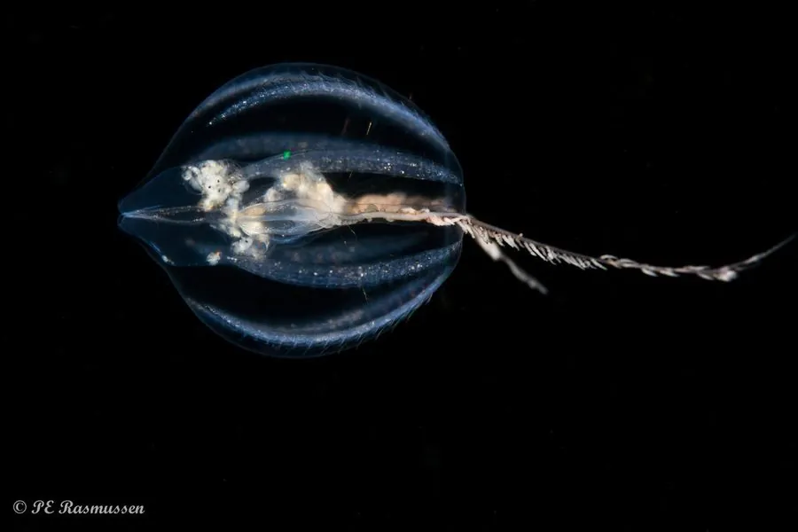

其他无脊椎动物 · 动物界
侧腕水母 Pleurobrachia pileus

体呈卵圆、两侧各伸出一条长触腕的栉水母，栖于近海表层，靠栉板划水游动，触腕粘捕小型浮游动物。
- 分类
- 门栉水母动物门纲触手纲目球栉水母目科侧腕水母科属侧腕水母属
- 栖息环境
- 温带近海表层水域，随海流漂动
- 地理分布
- 北大西洋、北太平洋与地中海等温带海域
- 保护级别
- 常见浮游动物，无保护需求
物种志
侧腕水母的体长约二至三厘米，体呈卵圆形或球形，通体透明，表面有八列纵向排列的栉板，每列栉板由许多细小纤毛组成，划动时折射出彩虹般的光泽。体两侧各有一个触腕鞘，从中伸出一条细长的触腕，触腕上生有许多侧枝和黏细胞，像一张可以收放的粘网。
它分布于北大西洋、北太平洋和地中海等温带海域的表层，是常见的浮游栉水母。它靠栉板的纤毛有节律地划水缓慢游动，触腕展开如网，黏住桡足类和小型浮游动物后收回口中。它雌雄同体，能自我受精，幼体发育不经过典型的浮游幼虫阶段。它既捕食桡足类，也是鱼类和其他水母的饵料，数量大时会影响浮游动物群落。
形态与习性
- 体长约二至三厘米，卵圆形透明
- 栉板八列纵向纤毛带，划动时呈彩虹光泽
- 触腕两侧各一条，可伸缩，带黏细胞
- 食性黏捕桡足类等小型浮游动物
- 繁殖雌雄同体，可自我受精
- 生态浮游食物网中的捕食者与饵料
趣味知识
- 它身上八列栉板一齐摆动时，会闪出彩虹一样的流动光带。
- 两条长触腕收放自如，展开就是一张看不见的粘网。
- 它不是水母，而是栉水母，靠纤毛划水而不是靠伞部喷水。